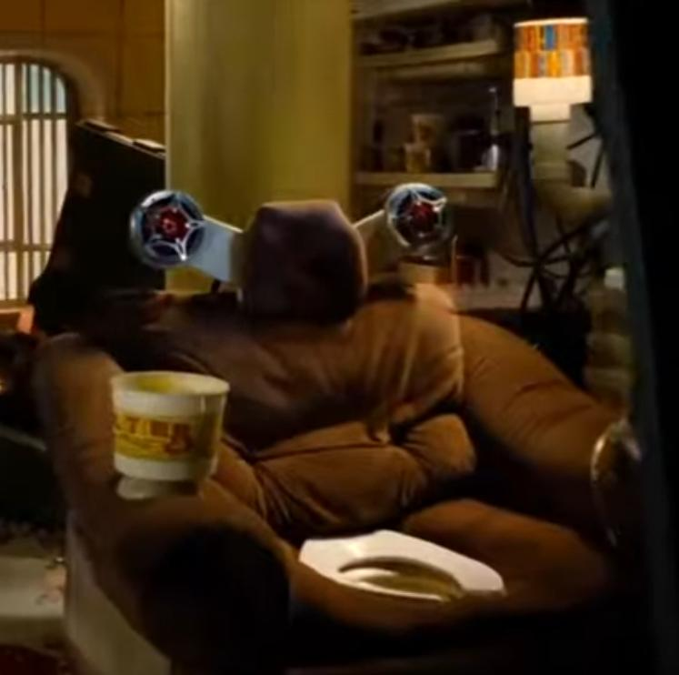
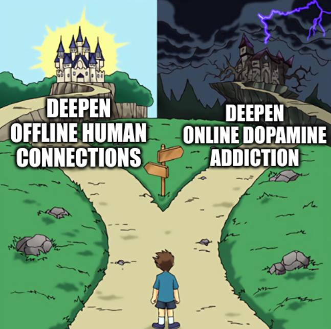

2025-06-03
Special thanks to dhole for review and suggestions.
IRL stands for ‘in real life’, used to describe the offline life of a person. Many years ago, people started to notice that the online world is not disconnected from the physical world, furthermore, it can be seen as an extension of it. This was observed by the Invisible Committee:
[…] if the hacker is ahead of his time it’s because he “didn’t think of this tool [the Internet] as a separate virtual world but as an extension of physical reality.” ‘To our friends’ - by The Invisible Committee, 2014
We’ve seen examples of this over the past couple of decades; with social networks and their impact on professional politics and people’s lives, but also with cryptocurrencies, which on the early days most people considered them not real money (not part of reality), while few hackers already saw them as a valid form of currency.
Another example was the usage of “AFK” by the ThePirateBay founders, to refer to the world offline (instead of “IRL”):
“We don’t use the expression IRL, we say ‘Away From Keyboard”, AFK; we think the internet is for real” - Peter Sunde, 2009
The offline world being extended by the online world brings us a form of hyperreality. The simplified idea is that on top of the reality we create the hyperreality, where traits from reality are enhanced, exaggerated, to the point where it’s not the original reality but something more, still to be consumed as reality.
The music analyst Jaime Altozano links this concept (hyperreality) together with the supernormal stimulus to the widespread usage of autotune and similar tools, not for robotic-voice effects that we usually identify as ‘autotune’, but for any singer that thanks to autotune sounds ‘more natural’ with better pitch, without notes out of place (both live and on record).
Another example are the instagram filters, which while allowing people to
‘enhance’ their pictures, they define a new hyperreality of (among others)
smooth skin and white teeth, which renders the physical world not good enough
compared to the online filtered and enhanced hyperreality; this affects back to
the physical world, with people wanting to emulate the hyperreality that they
get in the online world into the physical world, resulting, for example, in the
increase of plastic surgery interventions and into teeth whitening treatments.
People want to see their instagram filters in their mirror.
Before the era of AI-content-generation tools, we were already seeing the normal users (non-socialmedia-influencers) reducing their amount of posts creation on the various social networks. The main chunk of the population was already on a timid trend of reducing active production of content towards a more consumerism role of social networks, where the production of content is left mostly in the hands of a reduced minority (influencers, ‘content creators’).

In the early days of social networks, people were sharing their daily life experiences. As attention-gathering professionals (aka. influencers & marketing professionals) started to proliferate, people reduced their rate of post publishing, moving from a content-creation usage of social networks towards a content-consumption kind of usage.
Part of it might be due to just tiredness of the dynamics, in part as consequence of the algorithms of the social networks being silently reshaped towards exploiting human psychology for the respective app profit, or even due cyber-maturing of the users; but it seems plausible that part of the reasons are related to the attention-gathering professionals dominating those networks.
On top of all those trends, this past year we’ve experienced an acceleration of
the enshittification of the major online social networks, the catalyst of it
being the usage of AI to generate content.
Social networks like reddit, since are mostly text based, were the first to be hit by the first wave of AI-generated content. They suffered a substantial increase of the AI bloat over this past year, with ‘real’ users not being happy about it, usually flagging the AI-generated posts, which become more common each day. In the long term, users get fed up and migrate to other similar platforms with less AI bloat for the moment.
A potential conclusion is that, generally speaking, people don’t feel eager to spend (or waste) time to read AI-generated content that tries to appear as human-generated. They want to read content from other real humans. As mentioned, the result is that people get burned out from the platform.
With the refinement of AI-generated video,
similar effects can happen on other social networks; it’s now easier to generate
attention-gathering content for instagram, facebook, tiktok, etc.
Leaving aside the implications around political manipulation and social disinformation, this can lead to two main outcomes with regards users relations with the online social networks (which both can overlap at different ratios):
The obvious one is a bit of a dystopian future where people get more addicted to social networks to get the daily dopamine shots (soma style), and they prefer that to the physical world experiences.
I would like to be a bit more optimistic and imagine a trend of people getting burned out by the AI-bloat and moving away from online social networks; valuing more real-human connections (which can happen also online, but filtering out AI content). This might result in a deepening of physical world connections, together with a revaluation of the physical world experiences (the famous “touching grass” meme), as a counterweight to the fake AI-generated hyperreality of the online social networks.

Online social networks could stop being “the place where you get news from your friends lifes” as it was some years ago, to become another cog of the machinery that provides passive entertainment (together with streaming services such as youtube, netflix, etc.), while the real-social connections happen offline, where AI can not easily inject content.
It could be the case too, that the platforms react to the AI-bloat and adapt the
algorithms to avoid exhausting their users, therefore avoiding the mass exodus,
since it would affect their bussiness. In any case, I encourage you to
strengthen your bonds with your friends, family and communities :)